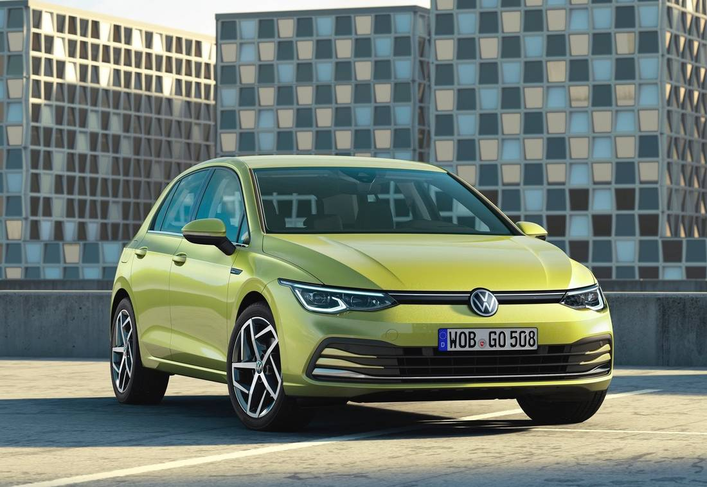
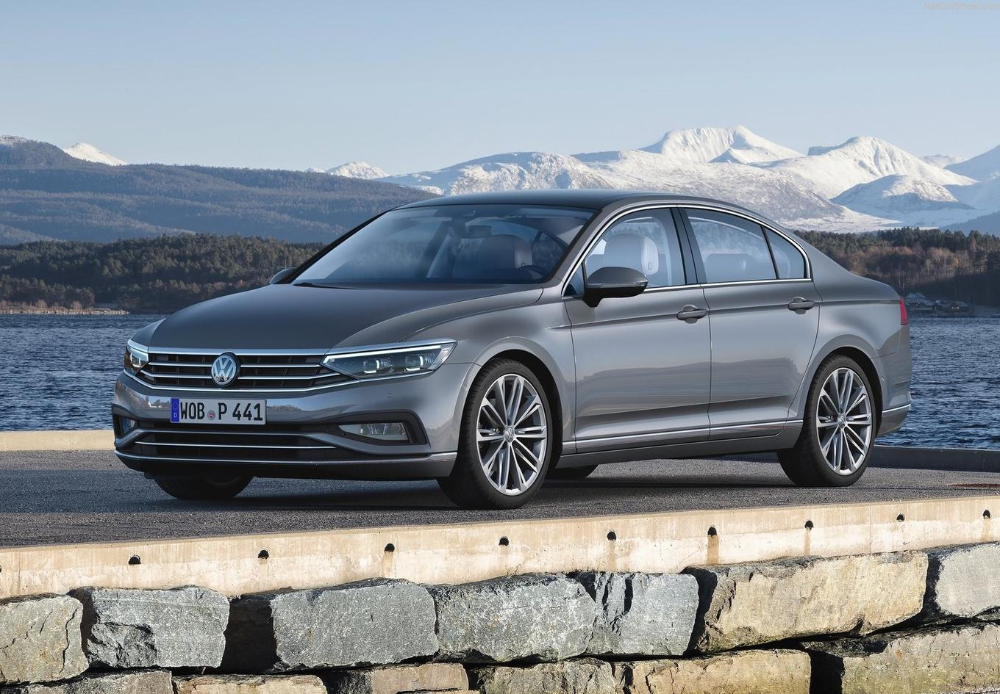
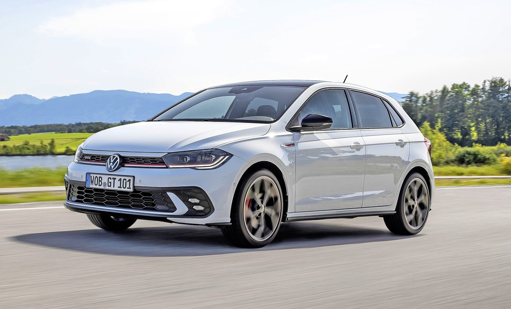

Golf
Der Golf ist ein Fahrzeugmodell des deutschen Herstellers Volkswagen. Anfang 2020 kommt der Pkw der unteren Mittelklasse in achter Generation auf den Markt. Er ist eines der wichtigsten Modelle von VW und wurde seit der Einführung 1974 über 30 Millionen mal gebaut. Damit gilt er zudem als eines der erfolgreichsten Autos überhaupt. Nur wenige andere Autos wurden bisher noch öfter produziert. Oft wird die Kompaktklasse daher auch als „Golf-Klasse“ bezeichnet. Bezeichnend für den Golf ist seit der Markteinführung die gute Raumausnutzung und das klare, zeitlose Design, wofür die Baureihe in verschiedenen Modellgenerationen zahlreiche Design-Preise erhielt. Als besonders gelungen gelten das Design von Golf I, Golf II, Golf IV und Golf VII.
Passat
Der VW Passat ist das erfolgreichste Mittelklasse-Modell weltweit und eines der erfolgreichsten Autos überhaupt. Seit 1973 wurden über 30 Millionen Stück gefertigt. Vor allem in Europa ist der in Emden hergestellte Passat sehr beliebt. Besonders als geräumige Familienkutsche und als Vertreterauto. Von den Vertretern her rührt es auch, dass Passat im Durchschnitt viel mehr Kilometer pro Jahr zurücklegen als die meisten anderen Autos. In Deutschland werden etwa 90 % aller Passat als praktische Kombis (bei VW Variant genannt) verkauft. Typisch für den Passat sind die gute Raumausnutzung und ein dafür optimiertes, zeitloses Design.
Polo
Der Polo ist ein Kleinwagen der Volkswagen AG und wird seit 1975 gebaut. Zunächst war der Polo als Sparversion des Audi 50 geplant. Der VW verkaufte sich aber so erfolgreich, dass der Polo fest in die Produktpalette aufgenommen wurde. 2017 kam die sechste Generation des Polos auf den Markt. Von der ersten Generation an bot der Kleinwagen mit dem Motor quer über der Vorderachse und Frontantrieb erstaunlich gute Platzverhältnisse und er zählt seit Jahrzehnten zu den meistverkauften Autos in Deutschland.